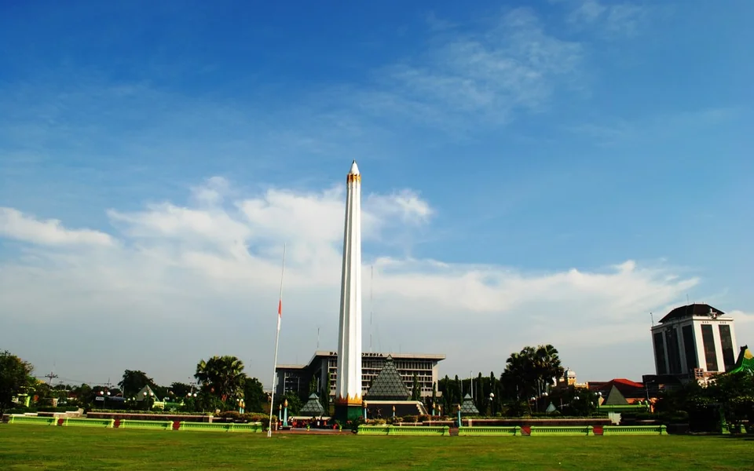
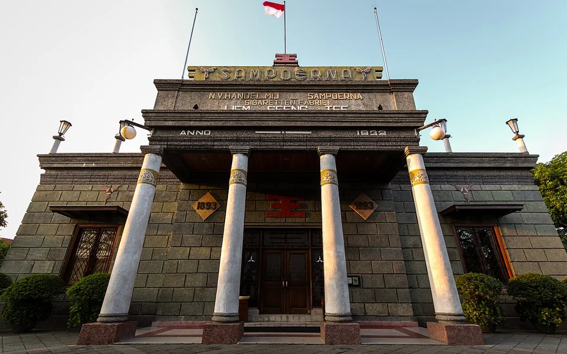
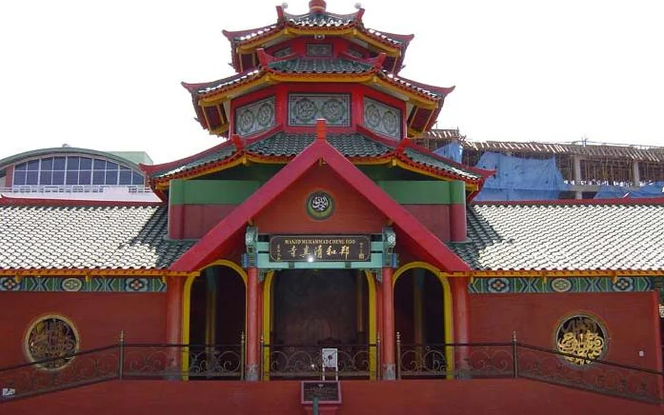
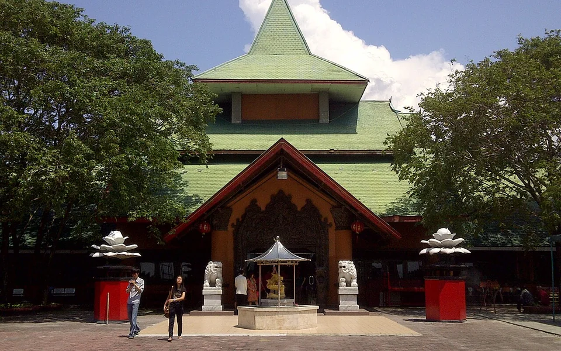
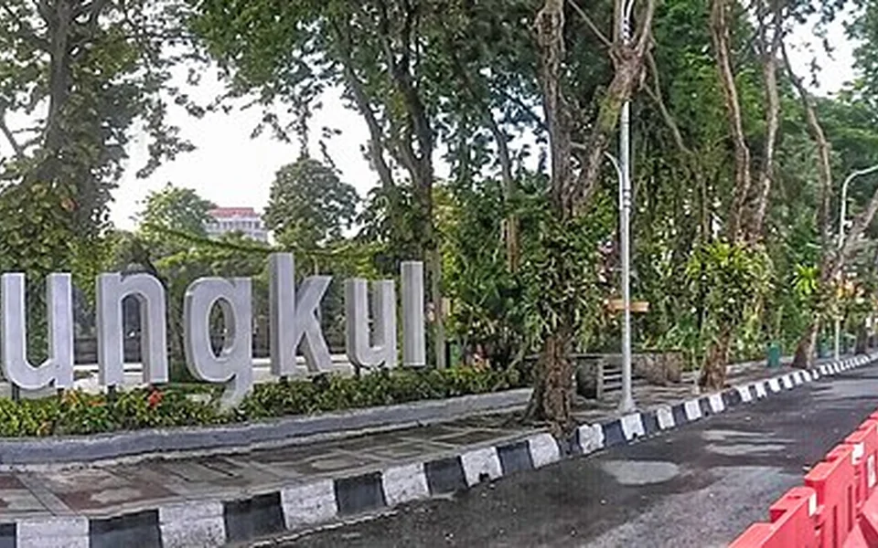
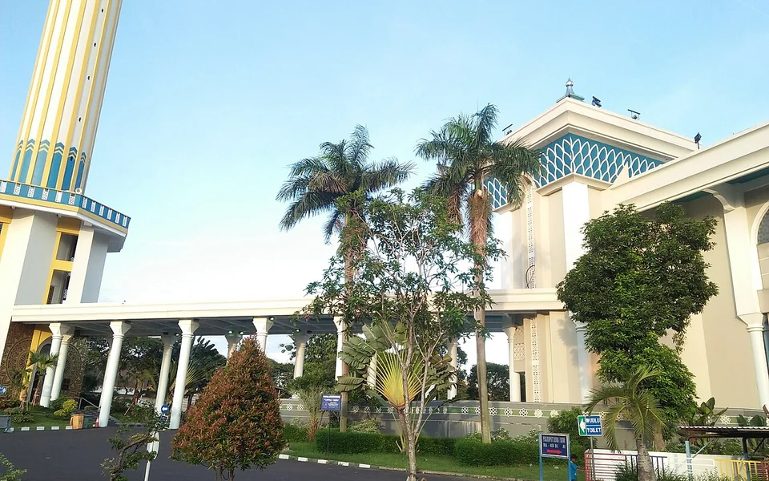

Tugu Pahlawan
Jl. Pahlawan
View location
Jl. Pahlawan
View location
Taman Sampoerna
View location
Jl. Gading
View location
Jl. Sukolilo
View location
Jl. Raya Darmo
View location
Jl. Masjid Al Akbar Timur
View locationtugupahlawan — sbamueller, CC BY-SA 2.0; cropped and resized.
houseofsampoerna — consigliere ivan from Bontang, Indonesia, CC BY-SA 2.0; cropped and resized.
chenghoo — JV052Nikken, CC BY-SA 3.0; cropped and resized.
sanggaragung — Okkisafire, CC BY-SA 3.0; cropped and resized.
tamanbungkul — Kuranaga0derajat, CC BY-SA 4.0; cropped and resized.